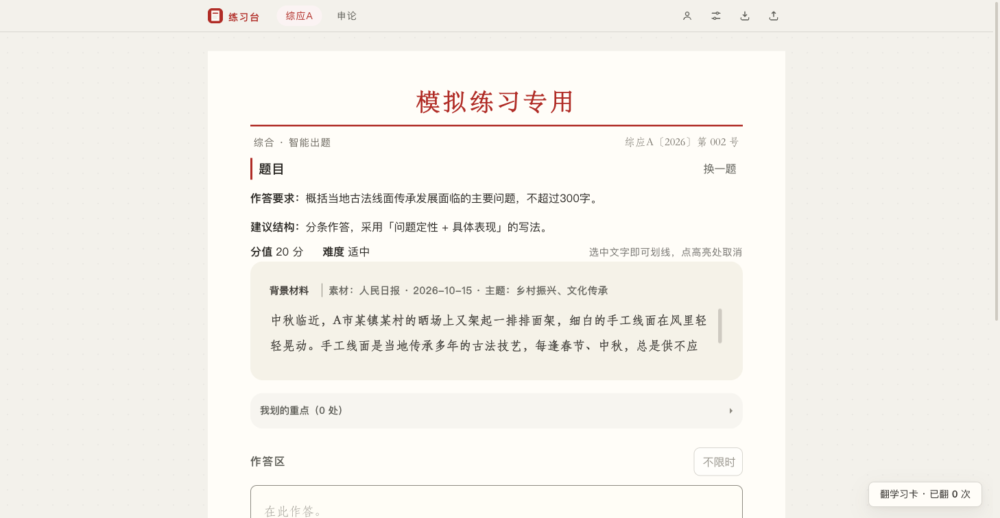
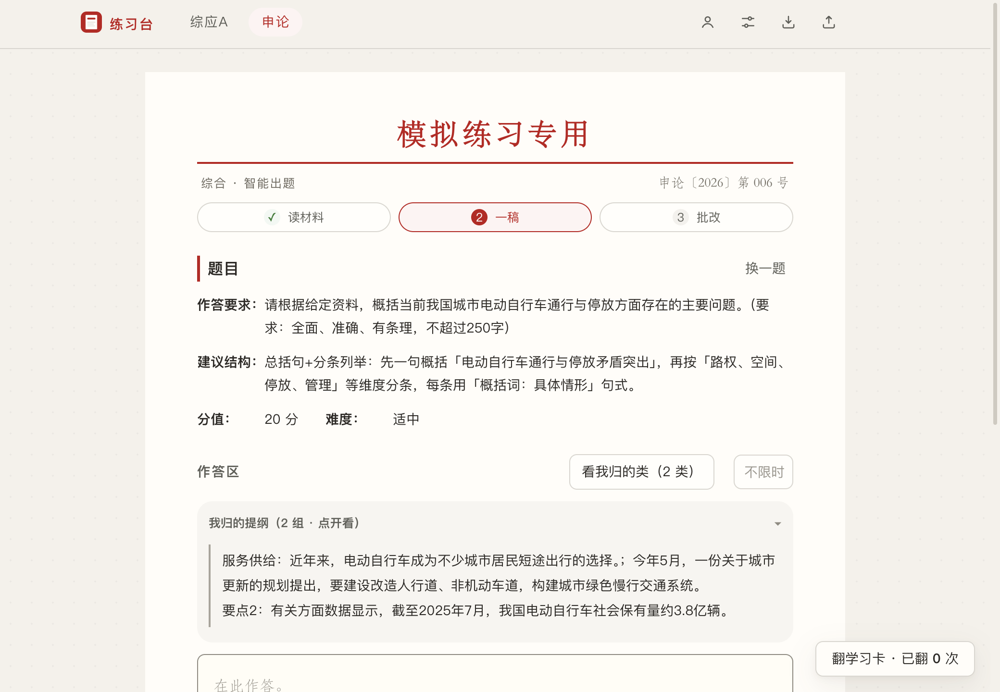
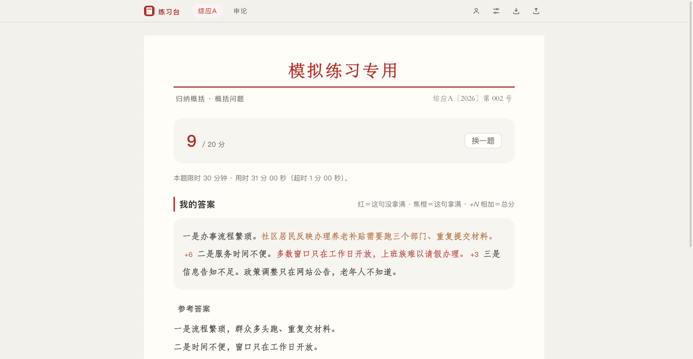

练习台
综应 · 申论
更新日志
遇到问题
练习台
给备考公务员与事业单位的人练综应A与申论：读材料、找点、写成篇，AI 按采分点逐句批改。 练习记录与画像只存本地。
下载 Windows 版
0.0.22 · 2026-10-17 · 83 MB · Windows 安装包（.exe）
装过一次就不用再回来：应用启动会自己查新版，查到在首页出一条提示，点「重启并更新」。
不是这台电脑？
下载 macOS 版
下不动就换一条：
gh-proxy.com
·
直连 GitHub
（慢）
这一页要在电脑上打开才能装——下载下来的是电脑版应用（Windows / macOS），手机用不了。
它能干什么
快判
一轮 5 题：看材料点选就判，练的是从材料里辨认说法——申论和综应A 的小题吃的也是这个动作。只记正确率，不进画像。
综应A
一轮走完学习卡 → 作答 → 批改，覆盖公文写作、归纳概括、综合分析、提出对策、案例实务五类。
申论
一篇走完学习卡 → 读材料找点 → 把点归成提纲 → 一稿 → 批改；批改会逐句标出哪一句拿到了分，加起来的数就是总分。
材料
材料是人工采编的真实报道骨架，一篇一篇入库；每条事实都能回到原文核对，出处与发布日期都记在库里。
限时
作答可以设限时，读材料、归类、写都算在里面，交卷停表；批改页会报用了多久、超了多少。
装上就三步
Windows
1
双击下载的 .exe，一路「下一步」装完（默认装进你的用户目录，不要管理员权限）。
2
从开始菜单或者桌面快捷方式打开「练习台」。
3
要是弹出「Windows 已保护你的电脑」：点「更多信息」→「仍要运行」。这个包没买代码签名证书，Windows 第一次都会先拦一下。
macOS
1
下载 dmg，双击打开，把「练习台」拖进「应用程序」。
2
第一次打开：在「应用程序」里
右键点「练习台」→「打开」
，弹窗里再点一次「打开」。 不是从 App Store 装的应用，macOS 第一次都会先问这么一次。
3
要是第 2 步还是不让开：打开「终端」，把下面这一行粘进去回车，再打开一次就行。
xattr -dr com.apple.quarantine "/Applications/练习台.app"
装的时候不动你的数据：更新只换程序文件，练习记录、画像、草稿、填过的 Key 都还在原处。
长什么样

作答页：题目与背景材料同屏，材料标明出处；选中文字即可划线。

一稿页：归类得到的提纲，需要时展开。

批改页：分数在前，逐句标注，句末分数相加就是总分。
截图取自应用内实际界面。
更新日志
各版安装包 →
看全部
…
条
这份日志与应用里「设置 → 更新日志」是同一份（应用内离线可看，不联网）。
出题与阅卷要用你自己在「设置」里填的模型 Key——那一步会把题目与你写的答案发给那个模型服务；练习记录、画像、草稿只存在你电脑上。
发现问题或者有建议：
在这里说一句
。